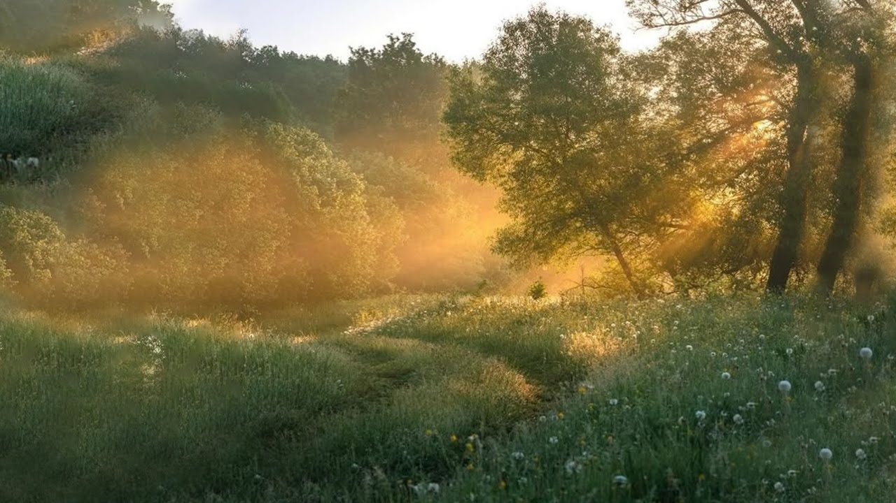
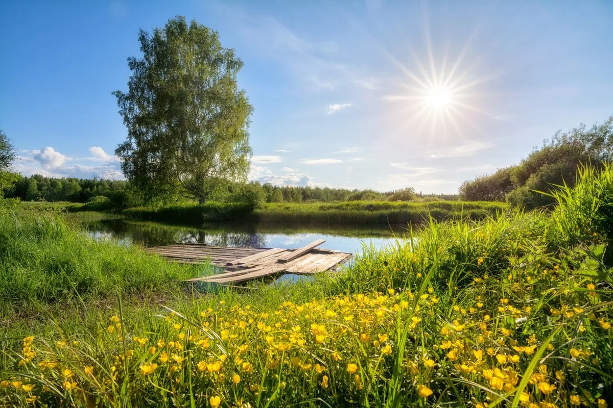
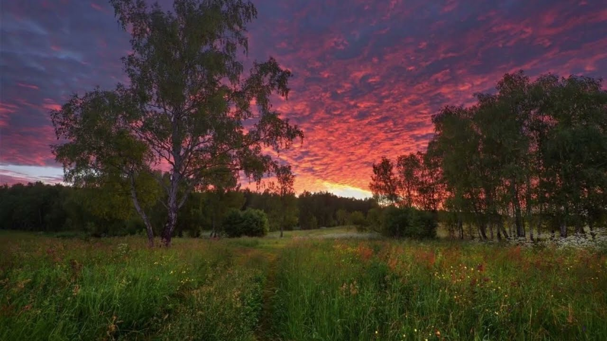

|
Природа просыпается с первыми лучами солнца. Роса на траве сверкает,
словно рассыпанные
бриллианты.
Воздух чист и прохладен, наполнен ароматом хвои и влажной земли.
В это утреннее время все кажется особенно свежим и новым.
День в лесу полон жизни и движения. Белка прыгает по ветвям, деловито собирая припасы. Слышится стук дятла и щебет птиц, сливающиеся в непрерывный многоголосый хор. Солнечный свет пробивается сквозь густую листву, рисуя на земле причудливые узоры. К вечеру природа затихает, готовясь ко сну. Последние солнечные лучи окрашивают небо в нежные золотые и розовые тона. Над рекой стелется легкий туман, и в наступающей тишине становится слышен лишь успокаивающий шепот листьев. Наступает время покоя. |
Природа Картинки природы


Природа вечером  |